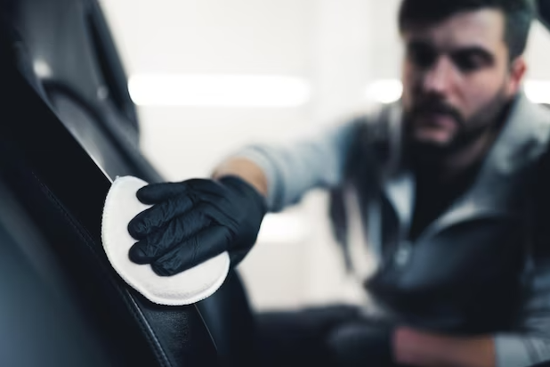

Si estás buscando un lavado completo de tu vehículo, nuestro servicio de lavado interior incluye la eliminación de manchas, la remoción de arena o guijarros, la limpieza de los cristales interiores y el pulido y limpieza de los asientos y plásticos del interior. Para el lavado exterior, aplicamos productos adecuados para proteger y reducir futuras manchas, como ceras especiales protectoras. También nos encargamos de la limpieza de la carrocería externa del coche y ofrecemos productos para la protección de los guardabarros y las llantas de aleación.
Nuestro equipo de mecánicos altamente capacitados se encarga de realizar reparaciones y mantenimiento en todas las áreas del vehículo, incluyendo el motor, la transmisión, el sistema de frenos, la suspensión y más.
¡El equipo de mecánicos de J.C Sells es el mejor! Recientemente llevé mi automóvil para una reparación del motor y quedé impresionado con su conocimiento y habilidades. No solo solucionaron el problema rápidamente, sino que también me explicaron todo el proceso y me dieron consejos útiles para el mantenimiento adecuado de mi vehículo. ¡Recomendaría J.C Sells a cualquiera que necesite servicios de mecánica integral!”
“¡Increíble servicio de lavado interior en J.C Sells! Mi automóvil estaba lleno de manchas y suciedad, pero después de su servicio de lavado, ¡parece nuevo! El equipo de J.C Sellsr hizo un trabajo excepcional al eliminar todas las manchas y dejar mi automóvil impecable por dentro. ¡Definitivamente volveré!”
Pedir cita por el telefono
WhatsSells +9 645 235 42-12